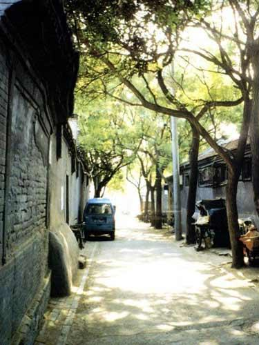
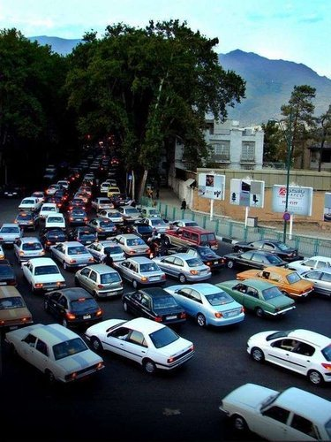
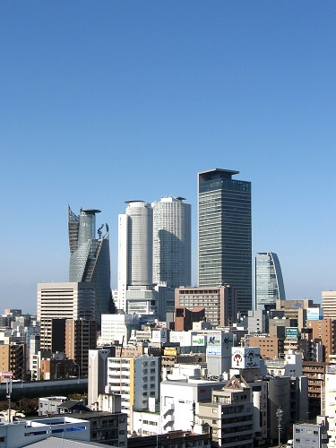
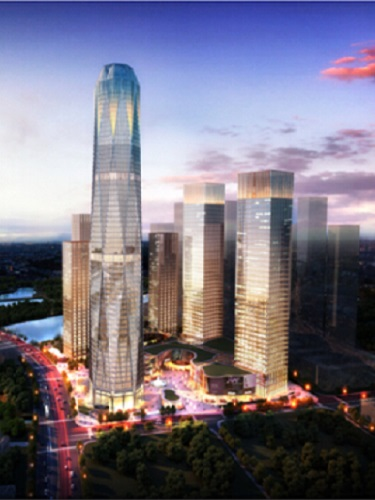
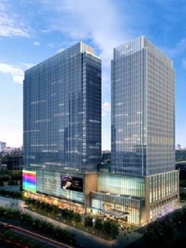

记忆回到从前，胡同里飘着棉花糖和春天青草的味道，旁边的大爷喝着茶下着棋，小姑娘在旁边踢毽子。
男男女女的青年走在不宽的街上有说有笑，而我的个子还没长过路边的迎春花。
随着北京的人口越来越多，交通的拥堵，环境的脏乱让人无法忍受。
有的小朋友捡起了路边的一朵小花，他妈妈说，太脏了！不要碰！
平地而起，高楼林立，人们在一步步解决城市当中的问题。
通州的城市副中心建设，成为了一座城市新的起点和开始。
2012年，在北京市第十一次党代会上，北京市委、市政府明确提出“聚焦通州战略，打造功能完备的城市副中”，更加明确了通州作为城市副中心定位，这也是北京市围绕中国特色世界城市目标，推动首都科学发展的一个重大战略决策。
北京城市副中心规划面积155平方公里，除了已经开工的行政办公区工程外，其他区域和项目目前都在进一步完善规划。2016年5月27日中央政治局会议提出，北京城市副中心要构建蓝绿交织、清新明亮、水城共融、多组团集约紧凑发展的生态城市布局，著力打造国际一流和谐宜居之都示范区、新型城镇化示范区、京津冀区域协同发展示范区。
2014年，市领导调研时对通州区工作给予充分肯定，强调，通州是城市副中心，在推动京津冀协同发展中处于桥头堡位置。要以总书记考察北京时的重要讲话精神为统领，进一步统一思想，明确努力方向，增强工作责任感和紧迫感，提高做好新时期首都工作的能力。要树立起问题导向意识，深入研究思考存在的突出问题，选准破解难题的突破口；要坚定信心，真抓实干，找出推动工作的抓手，形成合力。
2015年，市领导在调研讲话指出，当前，我们必须深入贯彻市“两会”精神，牢牢把握新常态、新定位、新目标，增强建设北京城市副中心的责任感和使命感。要坚持高站位高起点，统筹做好公共服务完善、交通建设、产业发展和人口规模控制等工作，努力把北京城市副中心打造成为世界一流的现代化国际新城。
2016年5月27日，习近平总书记主持召开中共中央政治局会议，研究部署规划建设北京城市副中心和进一步推动京津冀协同发展有关工作。由党的总书记出面，讨论一个特定城市建设问题，是改革开放以来中央政治局会议第一次。
你准备好了吗？